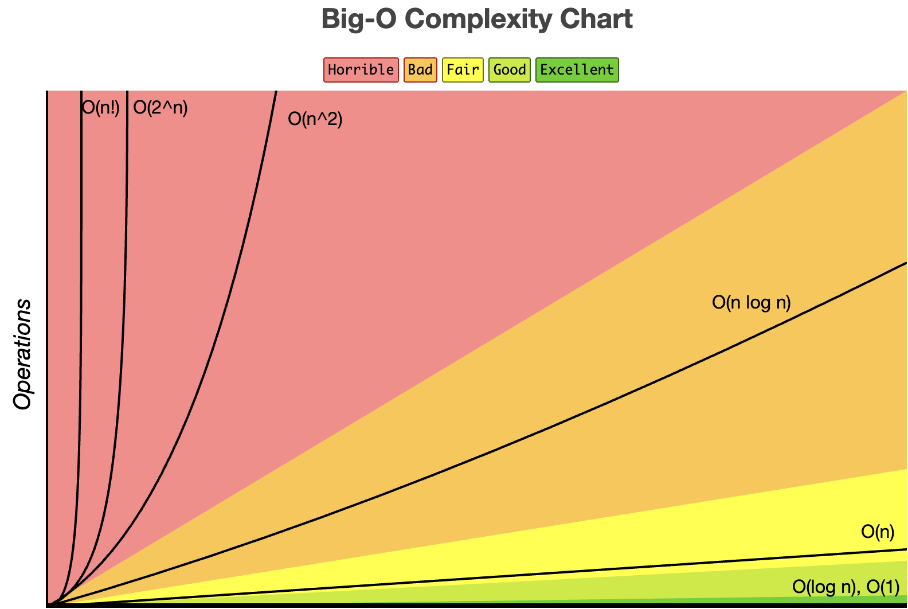

This page talks about what time and space complexity are, how they work, and why they matter. Click on a header to expand or shrink the text.
Time complexity is essentially how long it takes to run a program. Since different operating systems and memory drives take different amounts of time to run the same program, time complexity uses different notations called asymptotic notations to measure how long programs take. They each measure how many times an algorithm must iterate for each item within it. Using this notation, we can compare how efficient different algorithms are regardless of operating systems. To learn more about these notations, click on the "Big O Notation: Time and Space Complexity" section on this page.
Space complexity is similar to time complexity but measures space(Memory) instead of time. Space complexity is measured in how much memory is used per input item in a function. Just like time complexity, the amount of memory used in functions can vary depending on proccesing methods, so measurments such as big o-notation look at space complexity. Again, see "Big O Notation: Time and Space Complexity" to learn about how big-o notation is used to calculate space complexity.
Big-O notation was invented in 1894 by Paul Backmann. It specifies the "upper bound" - Maximum time it takes - for
an algorithm to run. This is typically how algorithms are analyzed. Let's look at how to read these complexity tables.

This graph shows the amount of time it takes for an algorithm to run based on how many items it has and the big-o time complexity.
For example, if an algorithm has a time or complexity of O(1), it will take the same amount of time to run/use the same amount of memory for each item needed to run
the algorithm.
Another example: If an algorithm has a space/time complexity of O(n), it will take up a specific amount of memory/time for
each item in the function.
Some algorithms, such as the the travelling salesman problem, have exponential time/space complexities.
This means that for each item in the set, the time/memory usage grows at an exponential rate.
For more information on reading
big-o tables and analyzing their results, see "Reading Big-O Complexity Tables and Why They Matter".
Now that you know what different complexities mean, let's look at a big-o table for data structures and analyze what the different time and space complexities mean:
Image credits: bigocheatsheet.com
Since there are many different data structures and algorithms in table above, let's focus on the queue data structure. It is the third data structure(on the left column.) A queue is essentially a grocery line. When an item is added, it goes onto the back of the structure. When searching through a data structure, the first item seen will be the oldest added.
This table shows the average and worst time complexities. This is not
applicable, however to the queue data structure(Only a few data structures have a difference between average and worst, like skip lists).
So, we can just look at the average time complexities. Let's look at accessing the queue. Accessing the queue means looking through
every single item, therefore taking a specific amount of time per item in the list
Let's look at the search function.
Well, to search through the queue, we will look through it until we find the number we are searching for.
On average, we will go through half the queue. But, something interesting about time complexity is that it doesn't
actually matter if the data structure goes through, on average, half, or twice the number of items. All that matters
in measuring time complexity is the exponents, because in the long run exponents will be the only time that matters. Okay, so searching
has a time complexity of o(n)
Next, insertion. Inserting has a time complexity of o(1) because it will take a specific amount
of time to run no matter what. Since queues always insert new items at the end, insertion does not depend on other items.
Finally, deletion. Similar to insertion, deleting does not depend on the number of items in the structure because it will always
delete the first item.
So, now you know how to analyze time complexity. If you want to practice, click
here to read about linked lists. Once you understand them, try to see if you can understand why
the time complexity in the linked list is the way it is(look at the diagram above to see the complexities). If you are wanting
a challenge, try the same thing but with binary search trees(click here to access).
If you haven't already, look at the Time Complexity secion above. Luckily, the space complexity of a queue is much simpler than time. Many space complexites for algorithms are rated o(n) because they use a specific amount of storage space per item. Some data structures(and algorithms, for that matter) have much more complicated space complexities. Much of the time, data structures/algorithms that have good time complexities have worse-than-average space complexities and vice versa.
While time and space complexity probably wouldn't be important for small data sets(Like for apps on your phone) it can be crucial to pick an important structure/algorithm for larger sets of data. For example, if you are doing a reseach study and need to quickly sort items, it would be important to pick a data structure with a low time complexity. Or, if you needed to perform an algorithm on a device with low memory, it would be important to pick a data structure with low space complexity. Think of time and space complexities as a sort of rating for how well a function performs.

Thanks for reading this article! I hope you enjoyed.
Back to main page